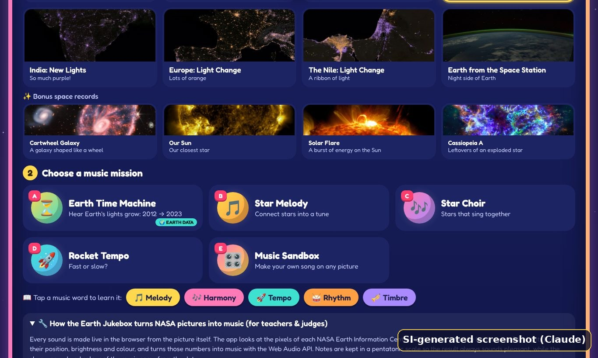
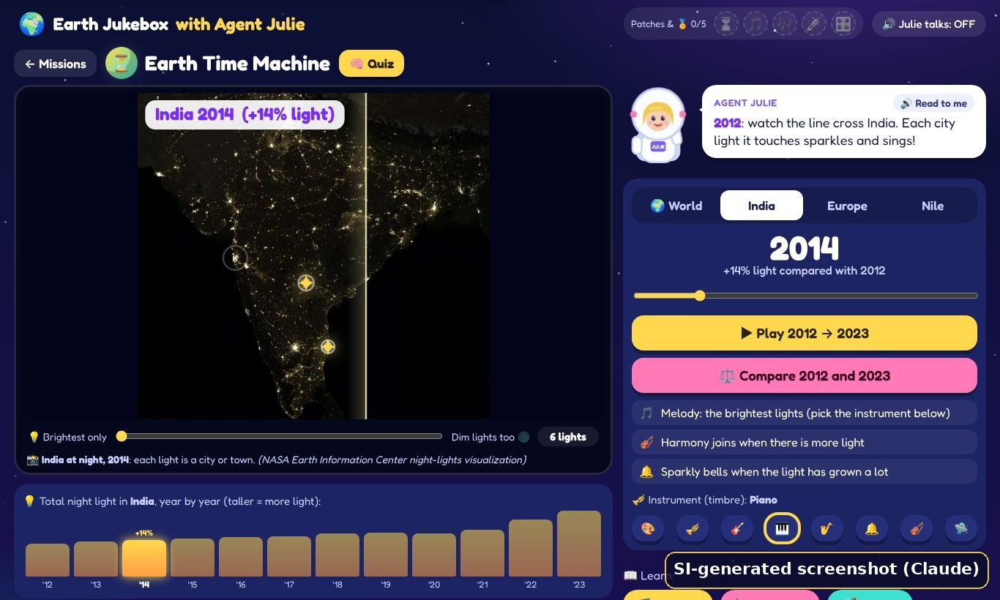
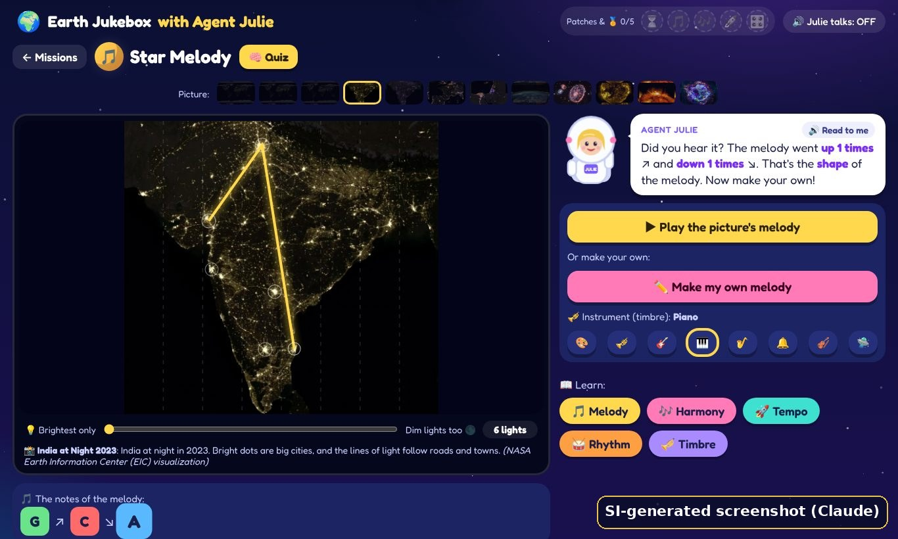
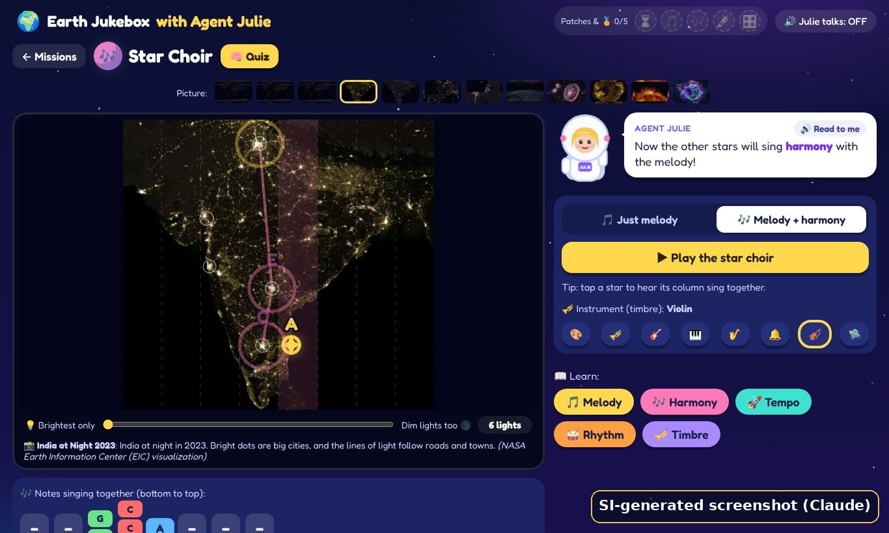
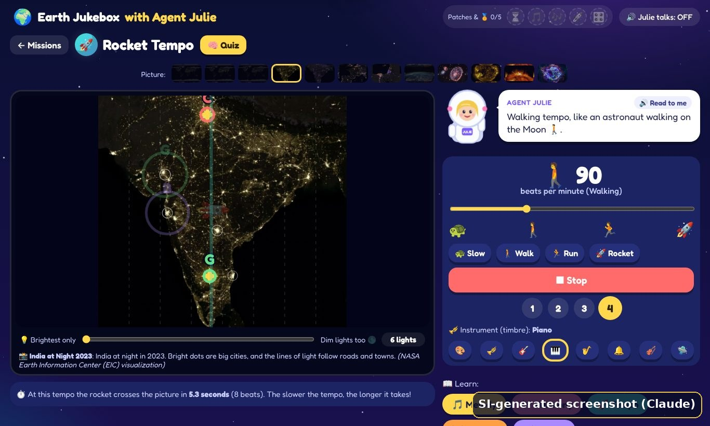
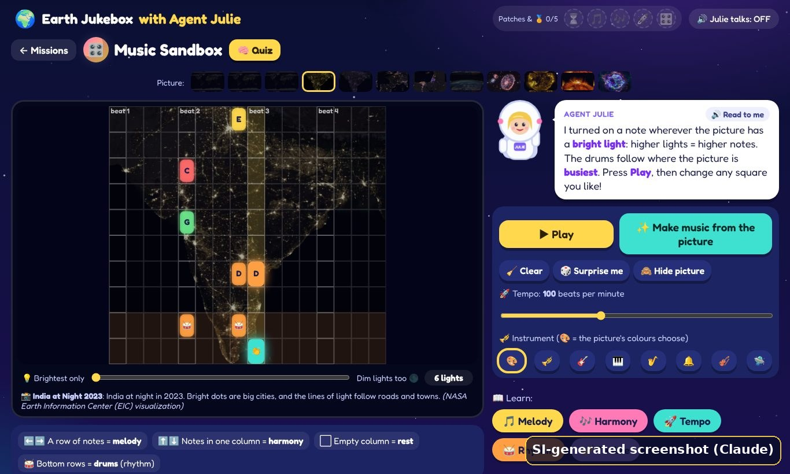
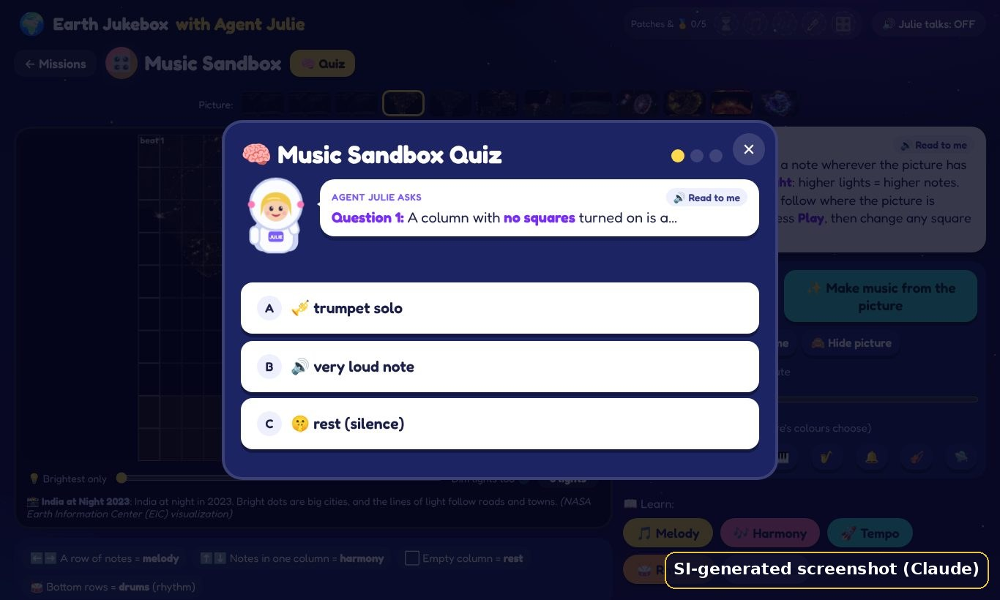

🛰️The challenge: The Earth Information Jukebox
NASA's Earth Information Center (EIC) shows how our planet is changing through rich visualizations made from satellite data. The 2026 Space Apps challenge asks teams to generate dynamic sonifications from the EIC's visual frames: to let people hear Earth data, not only see it.
Start from EIC frames
Use the actual visuals the Earth Information Center shows the public, not a separate dataset, so the sound and the picture tell the same story.
Make it dynamic
The sound should be generated from the data and change when the data changes, frame by frame and place by place.
Keep it faithful
Listeners should be able to trust what they hear: more of something in the picture should sound like more of something in the music.
Open the data to more people
Sound reaches people that charts miss: young learners, people who are blind or have low vision, and anyone who learns better by listening and doing.
📌 This summary is our reading of the challenge. Please see the official challenge page and its resources tab for the full brief.
💡Our idea: a jukebox where Earth's lights sing
From space, Earth's cities glow like stars. We treat each EIC night-lights frame as a record and each light as a note. Agent Julie, an astronaut and music detective, guides children through five music missions, so they learn melody, harmony, tempo, rhythm and timbre while discovering how night light on Earth grew from 2012 to 2023.
| What the challenge asks for | How the Earth Jukebox answers it |
|---|---|
| 🖼️ Sonify the EIC's visual frames | Every Earth picture is an EIC night-lights frame: the world map for each year 2012 → 2023, close-ups of India, Western Europe and the Nile, and the EIC change maps (purple = new light, orange = less light). |
| 🔊 Dynamic, data-driven sound | No audio files at all. The browser reads the pixels of each frame, finds the lights and synthesizes the music live with the Web Audio API. A different picture, year, region or slider position gives different music. |
| 📈 Show change over time | The Earth Time Machine plays each year in turn. More light means more notes, a faster tempo and more instruments, so you can hear India's lights more than double. |
| 🧭 Faithful, readable mapping | One clear rule per dimension: height → pitch, brightness and size → volume, same column → harmony, colour → instrument, total light → tempo and layers. A scan line, rocket or glowing path always shows which light is singing. |
| 🤝 Accessible and inclusive | Agent Julie can read everything aloud (“Julie talks” and “Read to me”). Big buttons, plain words, and a sound-first design. It is a single file that runs in any modern browser with no install or account. |
| 🎓 Learning and engagement | Five missions, a “music word” explainer with a Show me on the picture! demo, a 3-question quiz per mission, and medals. Quiz questions use data measured from the pictures. |
🔬How a NASA picture becomes music
Everything happens in the browser, in three steps.
Find the lights
Each pixel's brightness is compared with its neighbourhood (local contrast). Touching bright pixels are grouped into clusters, and big merged glows are split into tiles. For pictures without clear bright spots, a backup picks the brightest points spread across the image.
Rank them
Clusters are ranked by total brightness. The 💡 Lights slider starts with only the brightest few and adds dimmer ones, up to 150 circled lights.
Map data to sound
Each light's position, brightness, size and colour become pitch, volume, harmony and instrument. Notes stay in a friendly scale, so every result sounds musical while its shape comes from the data.
| What the picture shows | What you hear |
|---|---|
| ⬆️ Height of a light | Pitch: a higher light never plays a lower note |
| ✨ Brightness and size of a light cluster | Volume: bright clusters are louder, dim ones are softer |
| 🎶 Lights in the same column | Notes played together (harmony, snapped to C, F, G or Am chords) |
| 🎨 Colour of a light | Instrument (timbre), when 🎨 picture colours is selected |
| 🌍 Total night light in a year's frame | Number of notes, tempo and extra instrument layers (Earth Time Machine) |
🎮How to play
Open the game, turn your sound on, and follow Agent Julie. Here is each screen, step by step.
Choose what Earth will sing
- Pick one of the EIC Earth pictures: Night Lights 2012 or 2023, the change maps, India, Europe, the Nile, or Earth from the Space Station.
- Or try a bonus space record: the Cartwheel Galaxy, the Sun, a solar flare, or Cassiopeia A.
- Agent Julie tells you a short fact about the picture.
Press 🔊 Julie talks (top right) and Julie will read every message out loud.
Five missions, five music ideas
- A ⏳ Earth Time Machine: tempo, melody, harmony
- B 🎵 Star Melody: melody
- C 🎶 Star Choir: harmony
- D 🚀 Rocket Tempo: tempo
- E 🎛️ Music Sandbox: melody, harmony, rhythm
Finish a mission to earn its patch ✅, then pass its quiz for a 🏅 medal. Your patches show at the top of the screen.


Hear Earth's lights grow, 2012 → 2023
- Choose a region: World, India, Europe or Nile.
- Press ▶ Play 2012 → 2023. A scan line crosses each year's EIC frame, and every light it touches sparkles and sings.
- Listen: more light = more notes, a faster tempo and more instruments. Sparkly bells join when light has grown a lot.
- Press ⚖️ Compare 2012 and 2023 to hear the first and last year back to back, or drag the year slider and tap the bars.
The bar chart under the picture shows total night light for each year. The year label shows the change compared with 2012.


Connect the stars into a tune
- Press ▶ Play the picture's melody. Julie joins the brightest light in each part of the picture, left to right.
- Watch the note cards: higher stars = higher notes. Julie tells you how many times the tune went up and down.
- Press ✏️ Make my own melody, tap 4 to 8 stars, then Play my melody.
Change the picture with the strip at the top, without leaving the mission.


Stars that sing together
- Choose 🎵 Just melody or 🎶 Melody + harmony.
- Press ▶ Play the star choir. Lights in the same column sing at the same time, like a choir.
- Tap any star to hear its column sing together.
Play it both ways and ask: what does harmony add?


Fast or slow?
- Pick a speed: 🐢 Slow, 🚶 Walk, 🏃 Run or 🚀 Rocket, or drag the slider (50 to 180 beats per minute).
- Press ▶ Fly! A rocket flies across the picture and each circled light plays as the rocket passes.
- Count the beats 1 2 3 4 and see how long the trip takes at each tempo.


Make your own song on any picture
- Press ✨ Make music from the picture: notes turn on where the bright lights are, and the drums follow the busiest parts.
- Tap squares to change the song. A row of notes is a melody, a column is harmony, an empty column is a rest, and the bottom rows are drums.
- Try 🎲 Surprise me, change the tempo, or 🙈 Hide picture to focus on the grid.


Check what you learned
- Press 🧠 Quiz for three questions. Some are about music, some ask you to listen, and some use data measured from the pictures, like “Which year had the most night light?”
- Tap a music word (Melody, Harmony, Tempo, Rhythm, Timbre) for a short explanation, then press 🔭 Show me on the picture!


Controls you'll find in every mission
🎺 Instrument picker
Trumpet, guitar, piano, saxophone, bells, violin or space synth. Choose 🎨 and each light's colour picks its own instrument.
💡 Lights slider
Start with only the brightest lights and slide right to add dimmer ones, up to 150.
🔊 Read to me
Agent Julie reads her message out loud. Turn on “Julie talks” to hear everything.
← Missions
Go back to the home screen to change the picture or start another mission.
📊What we heard in the data
Total night light in each region's EIC frame, 2023 compared with 2012, measured in the browser by the same code that makes the music. This is what the Time Machine lets children hear.
India's frames grow loud and busy, the world speeds up, and Western Europe stays about the same, with a small dip in 2020. The EIC change maps help explain why: purple marks new light, orange marks places where satellites saw less.
🍎For teachers and judges
A 30–45 minute lesson plan for ages 7–10, plus everything you need to run it.
Warm up (5 min)
Show Night Lights 2012. Ask: what are the dots? Then tap 🎵 Melody and press Show me on the picture!
Explore (15 min)
In pairs, play Star Melody and Star Choir. One child listens with eyes closed and guesses whether the tune goes up or down.
Investigate (10 min)
Open the Earth Time Machine, choose India, then Europe. Which one gets faster and fuller? Check with the change map.
Create and share (10 min)
Build a song in the Music Sandbox and take the quiz. Talk about why light changed: new towns, new roads, LED lights.